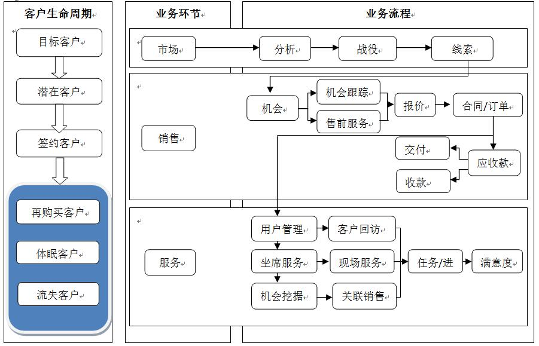

CRM客服管理系统方案
一、前言
越来越多的企业与管理者已经相信，以客户为中心是未来成功的关键。借助客户关系管理系统(Customer Relationship Management 简称CRM)，企业能更好地了解、服务于客户，改善客户关系，提升管理水平，降低企业经营成本，最终为企业赢得更大的利润。CRM因此成为现代营销管理不可缺的管理平台。特别是保险与培训行业，对客户关系的管理尤其重要。
CRM可帮助企业建立以客户为中心的商业模式，通过客户细分和客户生命周期管理。满足客户需求，并在此基础上进行一对一的个性化开发服务，通过该系统，可以为企业提升满意度，从而实现长久增值。
CRM可广泛应用于IT、医药、培训、化工、建材、机电设备、电工、电缆、金融保险等多种项目跟踪类行业。
二、系统简介
2.1传统的客户管理流程
传统的客户管理方式是打电话，手工记录，而且每个员工记录自己的客户，数据不共享，公司也无法很好地了解现在正在沟通的客户情况；例如，可能会出现A员工刚打电话跟这个客户沟通，然后B员工又打了这个客户的电话，从而导致客户反感，进而影响公司业绩。一般的客户转变过程如：陌生顾客——>潜在客户——>签约客户——>签约客情维护几个阶段。而随着公司客户群的不断增多，这几个阶段使用传统的纸笔记录方式已不合时宜，必须使用一整套的客户管理系统对其进行管理。例如上面打电话的例子，使用CRM客户关系管理系统后，A打电话后即把他跟客户所沟通的内容记录下来，并记录最后沟通时间，当其它人也从公司客户库中找到这个客户时就知道该不该打这个电话，若要打的话可参考之前的沟通记录应该跟客户谈些什么内容。同时，这个也是解决一个客户多个员工跟进而造成的混乱问题。
2.2系统结构模块
CRM包括了10个模块：员工工作台，营销，客户信息管理，产品与库存，售前管理，售后服务管理，财务，报表，个人中心和系统管理。CRM旨在改善企业与客户之间关系的新型管理机制，通过研究客户对企业的价值，尽可能地满足每个客户的特殊需求，特别是满足重要客户的特殊需求，从而提高企业竞争力，并使企业在同客户的长期交往中获得更多的利润。
本系统严格按照下面的客户生命周期和业务流程表为思想进行开发，故适合大多数企业使用。
CRM系统所遵循的客户形成及业务流程图：

2.3 CRM系统可实现的功能：
·管理详尽的客户资料：已有的数据模型为用户管理详细的客户资料提供有力工具，用户更可以根据不同需求自己扩展模型。
·客户类别细化：能够细分客户并挖掘潜在的商业机会。
·管理销售过程：销售过程清晰、可控，销售经验共享性强，提高销售团队的业务能力。
·信息实时：不论在世界任何地方，只要能登录互联网，就可以通过CRM系统管理客户。
·销售活动可视化：可以全面了解客户关系、根据客户需求进行交易、了解如何对客户进行纵向和横向销售、并随时记录获得的客户信息。
·客户沟通清晰化，系统可以记录每个客户的售前、售后及回访记录，实时显示该客户的状态；
·系统用户可不受地域限制，随时访问企业的业务处理系统，获得客户信息。
·企业结构模型可扩展：支持N层关系结构的集团型企业的业务模式。
·客户端轻量化：无需安装任何客户端软件，也不需要进行烦琐的客户端软件升级，全新的B/S结构只要使用浏览器即可使用本CRM系统。
·清晰的个人中心：工作计划任务跟踪、信息提示、工作任务等信息统计到个人桌面，用户对当前工作一目了然。
·安全、强大的权限管理：用户完全自定义角色权限。
三、系统模块详解
3.1工作台
工作台包括工作台、短信和文档中心三个模块。
工作台可以灵活定制工作台组件，显示用户关注的业务数据。 日程安排主要管理业务人员的销售活动， 上级可以看到下级的销售活动， 而且业务人员也可以共享销售活动。 短信可以通过此模块给客户或同事群发短信， 当然也可以直接填写手机号码单发或群发短信。 文档中心， 企业的网络U盘， 管理企业内部的各种文档， 通过负责人设置文档共享范围。
3.2营销
营销包括营销活动、群发邮件和群发短信三个模块。
营销活动主要管理企业的营销计划。 群发短信和群发邮件就是能快速定位到用户、客户或者联系人进行群发。
3.3客户信息管理
客户信息管理包括客户、联系人、联系记录和客户关怀四个模块。
客户主要管理客户的详细信息以及客户的相关数据，可以合并重复客户和批量修改客户信息，点击英文字母即可查找以英文开头的汉字为首的客户。 联系人主要管理与客户相关的联系人信息， 一个客户可以对应多个联系人， 多条联系记录。 联系记录主要管理与客户业务往来的信息。 客户关怀是记录和管理销售活动中客户关怀活动，同时，也起到了客情关系维护的功能，防止客户流失。
3.4产品与库存
产品包括产品、价目表、产品分类、产品库存四个模块。
产品主要管理本公司所销售或生产的产品档案信息。 对于培训或保险客户，产品就是其培训课程或保险类别，价目表主要管理产品的价格信息， 一个价目表包括多个产品。 产品分类主要是对产品的类别进行管理， 用户可以快速的通过产品分类找到相应产品 。同样，可以打开产品库存表快速查看现有产品库存情况。
3.5售前管理
销售主要包括销售机会、报价单、合同管理、发货单五个模块。
销售机会主要管理跟踪的销售业务和待定交易。 通过销售机会可以建立您的商机流量，可以记录某客户售前状态，例如通过查看售前管理可以判断某客户是否是有机会的潜在客户。也可通过销售机会链接到营销活动来评测市场营销计划的投资回报率，对业绩的把握和提升有很好的辅助作用。 报价单主要管理客户可能购买产品的价格清单。 合同管理主要管理与客户所签订的合同清单以及合作信息。
3.6售后服务管理
售后包括报修单、知识库和知识库分类三个模块。
报修单主要管理客户反馈的问题或疑问， 并通过报修单跟踪并解决客户的问题，记录客户维修记录等。 对于培训或保险行业客户，售后服务就是客户的客情管理，可以在业务员回访时记录该客户的回访状态与情况，以便在续约时制定符合该客户的产品；知识库主要管理客户常见问题的解决方案， 可以把解决后的报修单转化成常见问题，而且可以通过树状结构选择知识库。知识库分类主要是对知识库的类别进行管理， 用户可以快速的通过知识库分类找到相应的知识库。
3.7财务
财务主要包括应收款、应付款和欠款催收三个模块。
应收款主要通过合同订单创建而
3.8报表
报表主要包括统计报表、常用报表等多个模块。
统计报表主要针对对企业的业务数据进行统计， 并图形化显示统计数据， 让企业管理人员快速了解和管理企业业务。 常用报表是企业管理人员经常需要看到的综合报表。员工绩效模块是帮助企业管理人员快速了解员工的工作绩效， 提高管理人员的管理效率。 销售目标方便管理人员按月制定销售目标，设定目标后，自动统计实际完成值，并以柱状图显示统计结果。
3.9个人中心与系统管理
个人中心与系统管理也称控制面板，包括系统设置、缓存、回收站等功能；
系统设置可以初始化CRM系统， 例如创建易客CRM用户、共享规则、个人权限等；除此之外还有数据备份和还原等一系列的系统设置工具。